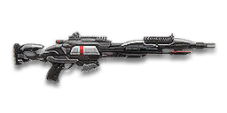

← Back to the TRAP-M1 comparison
Sage Guide · Terran Republic · Infiltrator
A 1,000-cert burst-fire rifle that behaves like a scout rifle wearing a sniper's badge: 2-round and 3-round bursts, 21 rounds in the magazine, and the tightest hipfire of any sniper rifle. This page teaches you to pick a burst mode and make every burst land.
The one-line verdict: a burst-fire scout rifle, not a true sniper: three headshots kill at any range (0.16 s in 3-round burst), five body shots kill up close (0.44 s in 3-round burst), and it is nearly silent on the minimap — enemies only hear it inside 40 m. Its weakness is the long-range damage floor: 167 per bullet past 250 m.

The TRAP-M1 · Terran Republic · 21-round magazine · 1,000 certs
Picture the scene, because you've probably lived it: you're sprinting across a courtyard, an enemy appears, and you do everything at once — hold the trigger down while you're still running, then press aim-down-sights (ADS) a split-second later, finger still down. The sight picture snaps in, it looks precise… and your bullets spray everywhere except the man in your crosshair. He kills you. It feels like the game cheated. It didn't — here's what actually happened.
You started firing from a sprint, from the hip. Sprinting is the least accurate state in the game: your cone of fire starts at 7.0° — fully bloomed, the widest it can ever be. The TRAP-M1's hipfire is the tightest of any sniper rifle — a 3.5° standing cone — but from a sprint you inherit the full 7.0° anyway, and every shot adds bloom on top.
Then you pressed ADS mid-hold — and nothing reset. Aiming down sights does not shrink a cone of fire that is already bloomed. The scope only gives you a precise picture; the bullets keep flying out of the wide cone you built while running and hipfiring. That's the whole mystery: accurate-looking aim, wildly inaccurate gun. And a burst rifle punishes it twice: a burst fired into a bloomed cone wastes two or three rounds at once.
Two timers stack the deck further: your gun needs about 0.3 s to settle after a sprint, and raising the sight itself takes 0.15 s. Trigger held through all of it means your first burst is pure confetti — and the 250 ms gap before the next burst is time the enemy uses to kill you.
1 · Feet. Let go of sprint (and the trigger, if you're already holding it). Stop, or drop into a strafe — anything but a full sprint. Your aimed cone is 0.0° only when your feet are still.
2 · Sight. Press ADS and let the sight come up. This takes a heartbeat — 0.15 s on this rifle, the fastest scope-in of any sniper rifle — and your 1x–4x scopes don't sway at all, so there's no breath to hold.
3 · Trigger. Now fire — one burst, deliberately. Starting from the aimed cone of 0.0°, your first burst lands where the dot points. Then let the burst gap pass (250 ms in 2-round mode, 200 ms in 3-round) before the next burst. One aimed burst, gap, next burst: that is the whole rhythm of this rifle.
Stop → aim → fire. If you take one habit from this entire page, take this one. You'll practise exactly this rhythm in the trainer in section 04.
Four beats, left to right — the same mistake the cards above describe, drawn out.
1 · SprintingYour cone starts maxed at 7.0° — the widest it can ever be.
2 · Trigger heldFiring from the hip while running — every shot adds bloom.
3 · ADS, mid-holdThe sight looks precise — but aiming down sights does not reset bloom.
4 · The sprayBullets fly out of the wide cone you built. The enemy walks away.
Same fight, done right. Each beat has a job, and the order is the whole lesson.
1 · StopLet go of sprint (and the trigger). About 0.3 s for the gun to settle.
2 · AimPress ADS and let the sight come up (~0.3 s).
3 · FireNow fire — from the aimed cone. First shots land where the dot points.
The exception — under ~8 m, skip the whole danceHipfire works, no ADS needed, and stopping is optional. Keep moving, strafe, and let the hipfire ring do the work.
One honest difference from the picture above: the exception panel says hipfire works under ~8 m. On the TRAP-M1 it actually does — better than on any other sniper rifle: a 0.49 m standing ring at 8 m, and 0.33 m with a Laser Sight. It is the one sniper rifle that can hipfire a burst and expect hits. Past ~10 m, still scope in.
Every enemy infantry has 1,000 health (500 shield + 500 health). Your bullet does 200 damage up close, fading to 167 at 250 m. Headshots count ×2.0, leg shots count less (×0.9). That gives you three numbers worth memorising: three headshots kill at any range (0.16 s in 3-round burst); five body shots kill up close (0.44 s in 3-round burst, 0.66 s in 2-round); and at the floor you need six body shots (0.52 s in 3-round burst, 0.74 s in 2-round).
| Range | Damage | Head | Chest | Legs | Chest vs Nanoweave | Chest vs shielded Heavy | Head vs shielded Heavy |
|---|---|---|---|---|---|---|---|
| Close · 0–50 m | 200 | 3 | 5 | 6 | 7 | 8 | 4 |
| Falling off · 50–250 m | 200→167 | 3 | 5 → 6 | 6 → 7 | 7 → 8 | 8 → 9 | 4 → 5 |
| At the floor · 250–350 m | 167 | 3 | 6 | 7 | 8 | 9 | 5 |
Perfect-accuracy times to kill are in the burst table below — the 3-round burst is always faster, the 2-round burst is steadier. Magazine: 21 rounds, with 168 in reserve.
Full power to 50 m, then a steady slide to minimum at 250 m. The gold dashed line is the 200 = five-body-shot line.
Nanoweave armour: since the Arsenal Update, sniper rifles use their own resistance type — Nanoweave cuts body and leg damage by 20% and does nothing to headshots. Your three-headshot kill is untouched. Body shots are what suffer: against a full-Nanoweave target you need seven body shots up close instead of five (and eight at the floor instead of six). Headshots are the answer — three of them end any fight at any range.
One rifle, four fighting styles. The right technique changes with distance — use the range finder below to see what your bullets do at any range, then learn the four bands underneath it. Your bullet drops as it flies (gravity 7.5 m/s², a third less than most rifles) and takes time to arrive — at 200 m it drops 0.42 m and takes 0.33 s to get there. Lead moving targets and aim above the head at long range.
How to fight here
Aim: centre of the chest, from the hip. Keep moving.
This is the one sniper rifle where hipfire is a real option: a 0.49 m standing ring at 8 m (0.33 m with a Laser Sight), and a burst puts two or three rounds into it at once. Five body shots up close — two bursts in 2-round mode, or one burst plus two rounds in 3-round. Keep strafing.
Aim: the head. One burst.
Full 200 damage, 1x–4x scope up — no sway to hold your breath against — crosshair on the head. Three headshots in one 3-round burst (0.16 s) ends the fight before the target can react. This is where the TRAP-M1 earns its keep: a scout rifle's kill speed with a sniper rifle's badge.
Aim: the head. One burst.
Damage slides from 200 toward 167, but three headshots still kill at any range — the burst is what matters, not the body damage. Body shots need six now (0.52 s in 3-round burst). Your 600 m/s bullet drops 0.42 m at 200 m: aim a touch high, lead runners.
Aim: the head. One burst.
Damage is flat at 167 now: six body shots, three headshots. Body shots are a 0.52 s advertisement of your position for a kill a bolt-action does in one round. Take headshots at stationary targets, or close the distance — this rifle is a close-range weapon.
Your accuracy is decided by two things before skill even enters it: what your body is doing (your stance sets the starting cone of fire) and what your finger is doing (each burst is two or three rounds, and the gap between bursts is part of the weapon). The TRAP-M1 has two burst modes and no semi-auto — the 2016 update took semi-auto away. 1x–4x scopes do not sway at all — there is no breath to hold, and no implant to buy. That is the whole point of a close-range rifle.
| Stance | Starting cone | What it means for you |
|---|---|---|
| Sprinting | 7.0° | Maxed out — the widest the cone can be. This is the section 01 disaster: never start firing from a sprint. |
| Hipfire, moving | 4.0° | Walking or strafing from the hip. The 0.56 m ring at 8 m in section 05 is this stance drawn out. |
| Hipfire, standing | 3.5° | Your point-blank default. The 0.49 m ring at 8 m in section 05 is this stance drawn out. |
| Hipfire, crouched | 3.0° | The tightest hipfire you have. Crouch when holding a doorway from the hip. |
| Aimed (ADS), feet planted | 0.0° | Standing or crouched makes no difference here — a dot, not a cone. This is why section 01's order matters. |
| Aimed (ADS), strafing | 0.25° | More than twice the planted cone, and you move at half speed (0.5×). Strafe between shots to stay hard to hit; plant your feet during each shot. |
| Mode | How your finger does it | Use it at |
|---|---|---|
| 2-round burst | One click, two rounds 80 ms apart, 250 ms before the next burst | Steady, controlled fire at 364 RPM. The tighter grouping and longer gap make it the accurate choice — the mode the wiki recommends for most fights. |
| 3-round burst | One click, three rounds 80 ms apart, 200 ms before the next burst | Maximum damage: three headshots in 0.16 s, five body shots in 0.44 s. The faster kill, at the price of a wider cone — bloom is 0.07° per shot in this mode. |
| Mashing the trigger | Clicking again before the burst gap has passed | Nowhere. The gun will not fire until the gap ends — your clicks during it are wasted, and a mashed trigger is a burst fired before you re-aimed. The trainer below counts your early clicks. |
A target 40 m away, aiming down sights. Click FIRE BURST to fire one burst — the rounds leave 80 ms apart, then the gun needs its gap (250 ms in 2-round mode, 200 ms in 3-round) before the next burst. Clicking during a burst or during the gap is an early click: the gun ignores it, and the trainer counts it. Aim for full cycles: burst, gap, re-aim, burst. Switch modes with the buttons and feel the difference — 3-round is faster, 2-round is steadier.
Burst gap — fills while the gun waits between bursts.
Your bursts will be graded here — full cycles beat mashed triggers.
Some things are easier to show than to say. Here's what your bullets actually do: how wide hipfire spreads at 8 metres, what a good burst rhythm looks like, and what the 1x and 4x sights really change. The hands-on version — firing a burst yourself — is the practice window in section 04.
A full-size target 8 m away — an arm's-length room fight. The rings show where hipfire rounds land around your aim point (the chest). Sizes are drawn to scale from the gun's real cone-of-fire numbers.
Read it this way: standing still, the 0.49 m ring roughly covers the chest — most rounds hit a target this size, which is why hipfire works point-blank on this rifle. But move and it grows to 0.56 m — wider than the torso — so the edge rounds start leaking past him, and the rings only grow with distance while the man doesn't. Past ~10 m that's rounds missing entirely: the exact moment to switch to aiming down sights, where the spread shrinks to a dot. With a Laser Sight the standing ring shrinks to 0.33 m — the tightest hipfire of any sniper rifle. (Ring sizes use the real geometry: spread diameter = 2 × distance × tan(cone ÷ 2).)
Every burst is two or three rounds 80 ms apart, then a gap before the next burst. Same 12 rounds, two very different outcomes:
The target pattern is one burst, a full gap, then the next burst — that's the ideal. Mashing the trigger during the gap fires nothing and costs you the re-aim: the burst after a mashed gap starts from where the recoil left you, not from the target. Two-round bursts at 364 RPM are the steady choice; three-round bursts at 500 RPM are the fast one. Either way, the gap is part of the weapon — respect it.
The target at 50 m is small but the view is wide open — you see the crate, the tower, and the next enemy coming. Fast to aim, nothing blocks your edges.
Same target, same 50 m — but he looks much taller, so placing shots on his head gets much easier. The price: your view narrows to the round window, the crate and tower are gone, and close targets feel fast and huge.
That's the whole 30-cert decision from section 06 in one picture: 1x for awareness, 4x for precision. The 4x shows you the head at 50 m — and magnifies your recoil with it, so fire in single shots.
Honest news first: the rifle arrives bare — default sights, no rail, no barrel, no ammo. Nothing here is free, so buy in the order shown and stop whenever the gun feels right. Everything below is an optional sidegrade, not an upgrade.
A clean red-dot sight with no zoom, and no sway — 1x scopes don't sway at all. Your best all-round option once you own it.
Good: everywhere indoors and out to ~50 m — which is most of this rifle's honest range.
Bad: picking out targets past 100 m; that's what the 4x is for.
Doubles your view magnification. Costs almost nothing — the price of a few kills.
Good: open-field bases and your 25–100 m game. Swap between 1x and 2x per fight.
Bad: tight indoor rooms — the zoom makes close targets feel fast and huge.
LX Tacti-Eye / LACO (3.4x) and TrueShot / LX Mark IV (4x) — the most magnification this rifle can use, and the far edge of its honest range.
Good: holding a lane at 50–150 m, where the extra zoom turns a head into a target.
Bad: any fight inside 30 m — the zoom tunnels your vision and magnifies your recoil.
Night-vision sight: enemies glow white against a dark view, and it sees through smoke.
Good: night fights, smoky doorways, spotting infiltrators by their outline.
Bad: daytime and long range — its view is short-ranged and washes out in bright light.
A 6x scope on a burst rifle. The magnification is real, but so is the sway — and a burst rifle wants targets close, not far.
Good: almost nothing a beginner does — the TRAP-M1's honest range ends where the 6x starts helping.
Bad: any fight inside 50 m, which is where you'll spend your first hundred hours with this rifle.
Plenty of veterans run this slot empty forever. A sniper rifle's recoil is a single shot — there is nothing to control.
Good: your first weeks. Spend certs on your suit and infiltrator tools first.
Bad: nothing — there's no downside to an empty slot.
You vanish from the minimap when firing and your shots are quiet. In exchange, damage starts dropping off 20 m sooner and bullets fly 15% slower (600 → 510 m/s) — harder to lead moving targets at range.
Good: flanking behind enemy lines, rooftop and tree work, solo play behind the front.
Bad: front-line fighting where everyone already knows where you are — you pay the damage cost for stealth you don't need.
Cuts vertical recoil by 30%. Costs you: hipfire spread grows 15%, and enemies see you on the minimap from 35 m farther away when you fire.
Good: if you mostly aim down sights and the climb bothers you — and on a burst rifle the climb is three rounds, not one.
Bad: hipfire builds and sneaky play — you get louder on the map and sloppier from the hip.
Swapping to the rifle is 30% faster and horizontal recoil drops 20%, but vertical recoil rises 20%. On a sniper rifle the recoil barely matters — the swap speed is what you're buying.
Good: quick-scoping and weapon swaps; getting the rifle up fast after a spot.
Bad: if you never swap weapons mid-fight, it does nothing for you.
Hipfire accuracy improves by a third (33% tighter cone): the standing ring at 8 m shrinks from 0.49 m to 0.33 m. Replaces the Comfort Grip — you can't have both.
Good: indoor point-holds and stairwell fights where you hipfire inside 8 m.
Bad: open bases — you give up swap speed for a bonus you rarely use.
A torch whose beam reveals cloaked infiltrators. Toggle it with the attachment key (X by default).
Good: hunting a stalker infiltrator camping your capture point — sweep corners with it.
Bad: as your everyday rail — it gives zero accuracy help, and the beam advertises your position.
This rifle has no ammo attachments — no Soft Point, no High Velocity. Its damage curve is what it is, and the numbers in section 02 are the whole story.
0 certs in attachments · The gun itself
What 1,000 certs buys you before a single attachment. Genuinely usable — learn the rifle on this before spending anything.
230 certs in attachments · Recommended
The best value in this whole guide. A 2x for the working range, a fast swap, and the tightest hipfire of any sniper rifle for the room fights.
230 certs in attachments · Flanking
Built to shoot from a stairwell nobody is watching. No minimap dot inside 40 m anyway, quiet shots, and a 0.33 m hipfire ring.
230 certs in attachments · Marksman
4x magnification and a tamed climb for the far edge of the falloff. Weak up close — fight from cover, at range.
A sniper rifle is a planted weapon. Find a ridge, a rooftop, or a rock with cover at your back and an escape route behind it — then stop moving. The player who picks the range usually wins the duel; a sniper picks it before the enemy even spawns.
Headshots deal double damage: three kill in one 3-round burst (0.16 s), versus five body shots in 0.44 s. Aim the whole burst at the head — the 80 ms between rounds is too fast for the target to move out of the way. One burst to the head is the whole rifle; the body shots are your backup plan.
Every burst needs its gap — 250 ms in 2-round mode, 200 ms in 3-round — before the next one can fire. Clicking during the gap fires nothing. Use the gap: re-aim, breathe, and let the next burst start from the target, not from where the recoil left you.
There is no breath to hold and no implant to buy on this rifle — the sight is steady the moment it comes up, in 0.15 s, the fastest scope-in of any sniper rifle. That is the whole point of a burst rifle: the sight is up and the burst is out before the enemy has finished turning around.
Reloading with even 1 bullet left takes 2.315 s; an empty rifle takes 3.25 s — an eternity mid-fight. With 21 rounds you can afford to reload early and often: after two kills, duck behind cover and top up. Treat the last burst as your emergency reserve, not your working magazine.
Your minimap dot only reaches 40 m — the quietest sniper rifle in the game — but your tracer is still thick and long. Every burst you fire is a flare that says 'here I am'. After a kill — or a miss — relocate: ten metres sideways is enough to make the counter-sniper's return shot miss. The rifle that stays in one place is the rifle that dies in one place.
Every gun has a price. Here's where the TRAP-M1 pays — and the habit that covers each hole.
Three headshots is the fastest kill you have — 0.16 s in 3-round burst — and a bolt-action does it in one round, instantly. Past 250 m your damage is at the floor: 167 per bullet, six body shots, and a bolt-action is doing the job in one round.
Play around it: Play around it: don't duel fair and don't fight far. Shoot from cover, inside 100 m, from behind — the enemy should be dead before he knows where the burst came from.
Clicking during the 250 ms (2-round) or 200 ms (3-round) burst gap does nothing — the gun will not fire until the gap ends. A mashed trigger is a burst fired before you re-aimed, and a burst fired off-target is three wasted rounds.
Play around it: Play around it: one burst, gap, next burst (habit 3) — and use the trainer in section 04 until the rhythm is automatic.
Between bursts you cannot fire for 200–250 ms. A bolt-action's rechamber is longer, but a carbine's refire is 80 ms — inside 20 m, the carbine kills you inside your own gap.
Play around it: Play around it: don't take close fights against automatics. Your gap is for re-aiming, not for standing in the open — fire from cover, and break line of sight during the gap.
2.32 s with rounds left, 3.25 s on empty — and 21 rounds go fast in bursts. Four bursts and the magazine is dry.
Play around it: Play around it: reload early and only in cover (habit 5), and count your bursts — two kills, then reload, every time.
1x–4x scopes, no sway — but no magnification either. Past 150 m you are guessing at heads you can barely see, and your damage is falling the whole way.
Play around it: Play around it: if the fight is past 150 m, you are on the wrong rifle — the 99SV or a bolt-action owns that ground, and this one owns the ground inside it.
Open the world map, travel to VR Training, and run these on the target dummies. Five minutes before a play session beats an hour of dying confused.
At 40 m, kill dummies with one 3-round burst to the head — 0.16 s, three hits, one kill. If the burst misses, you aimed at the chest: raise the crosshair and try again. One burst, one kill is the goal.
Kill dummies at 40 m with the trainer rhythm from section 04: burst, full gap, re-aim, burst. If you click during the gap, you failed the drill — the next burst must start from a re-aimed crosshair. Switch between 2-round and 3-round and feel the difference.
Pick a dummy, stand 5 m away, and hipfire bursts into it without stopping or scoping in. This is the TRAP-M1's party trick — the tightest hipfire of any sniper rifle — and the one that fires while your movement does the defending.
Kill one dummy, then move ten metres sideways to a new position before the next burst. Repeat five times. This is habit 6 made automatic: never fire twice from the same spot.
Fire exactly two bursts, step behind a pillar, reload, repeat. Train your hands to reload early and only in cover until it's automatic — with a slow reload, in real fights you'll do it without thinking, which is the point.